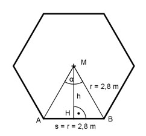
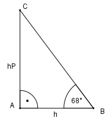
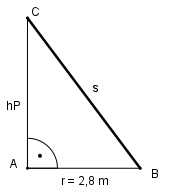

Aufgabe 109 Auf einen Turm ist ein Dach in der Form einer regelmäßigensechseckigen Pyramide mit einer Grundseite von 2,8 m aufgesetzt. Ihre Seitenflächen sind unter 68° geneigt. Wie groß sind das Volumen V des Daches und die Länge s einer Seitenkante?

360° α = ----- = 60° 6 Im Dreieck HBM: h cos α/2 = --- |*r r r * cos 60/2° = h h = 2,8 m * 0,866 = 2,4 m h * s 2,4 m * 2,8 m AG = 6 * -------- = 6 * --------------- = 20,2 m2 2 2
hP tan 68° = ---- | *h h h * tan 68° = hP hP = 2,4 m * 2,4751 = 5,94 m AG * hP 20,2 m2 * 5,94 m V = --------- = ------------------ = 40 m3 3 3
Satz von Pythagoras: s2 = hP2 + 2,82 s2 = 5,942 m2 + 2,82 m2 = 43,12 m2 s = √43,12 m2 = 6,57 m